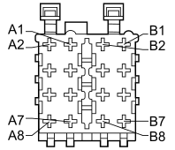

P020A RADIO (DASHBOARD)
- Path
- Electrical equipment > 3 CONNECTORS > P VARIOUS CONSUMERS > P020 RADIO > P020A RADIO (DASHBOARD)
- Kind
- connector pinout (pin -> wire colour -> other end)
- Applies to
- all engines; all production periods
- Interactive page
- https://sloeber94.github.io/elrnDB-fCrm/en/#/194005444
Applies to: all engines; all production periods

Wiring | Colour |
|---|---|
NERO (black) |
Pin | Cable | Destination | |||
|---|---|---|---|---|---|
Sec.. | Colour | Node | Connect. | Pin | |
1 | 0,35 | NS (black with pink stripe) | 4 | ||
3 | 0,35 | BS (white with pink stripe) | 4 | ||
4 | 1,5 | SN (pink with black stripe) | 13 | ||
8 | 2,5 | N (black) | 3 | ||